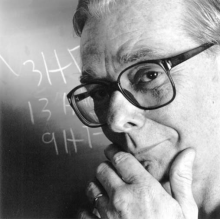

Please note: the AAS Obituaries are temporarily being hosted on this website while their full content is being ingested into the PubPub publishing platform newly adopted by the Bulletin of the American Astronomical Society. When the migration is complete, your existing links will take you to the final, migrated content. Contact peter.williams@aas.org with any questions.
John Beverley Oke (1928-2004)
John Beverley (Bev) Oke passed away of heart failure early on 2 March 2004 at his Victoria, B.C. home. Bev's insatiable scientific curiosity led to fundamental contributions in many areas of stellar and extragalactic astronomy, including the development of advanced instrumentation for the largest optical telescopes and the mentoring of scores of grateful students and colleagues.
Bev Oke was born in Sault Ste. Marie, ON, Canada on 23 March 1928, the son of Lyla Parteshuk and the Rev. C. Clare Oke. He entered the University of Toronto in 1945 to study physics with a steadily increasing fraction of astronomy, receiving his BA in 1949. Summer employment at the David Dunlap Observatory (DDO, 1948) and at the Dominion Observatory (Ottawa, 1949, 1950) sealed his interest in astronomy as a career. For his MA thesis (1950, Toronto), performed under theoretician Ralph Williamson, he made interior models of the Sun, and was proud to have proved that the proton-proton cycle was indeed the source of solar energy.
Upon entering Princeton University he worked with Martin Schwarzschild on stellar interiors models and Lyman Spitzer on interstellar lines. A lifelong friendship with Alan Sandage began during Bev's second year while Alan was a post-doc at Princeton. During Bev's third year he spent three months in Pasadena with Lyman obtaining data for his thesis on Of stars. While in Pasadena he began a second life-long collaboration with Jesse Greenstein, an astronomer whose approach to science Bev deeply respected.
In the small field of astronomy in that era, Bev wrote to DDO Director Jack Heard indicating the nearing completion of his PhD studies and his interest in a position. This led to a lectureship at the University of Toronto (1953-1956), followed by an Assistant Professorship (1956-1958). Bev's interest in instruments began at this time, when he built a device to convert photographic density to intensity, and worked with DDO engineer-machinist Jerry Longworth to implement one of the first two photoelectric scanners ever built. His main interests at the time were the classification of the thousands of stellar spectra in the DDO archives, and studies of Cepheids using his new spectrum scanner. At a Halloween party in 1954 he met Nancy Sparling. Together they initiated a life partnership factually punctuated by their August, 1955 marriage and the arrival of their children, Christopher (1957), Kevin (1958), Jennifer (1961) and Valerie (1966). Their home was notable to all for the deep aura of familial love and joy in the pursuit of knowledge and accomplishments.
In winter 1957-58 Jesse Greenstein invited Bev to join Cal Tech, where he became an Associate Professor (1958) and then Professor (1964); during the period 1970-1978 he was Hale Observatories Director. With the large telescopes at Mount Wilson and Mount Palomar, astronomy there could aspire to be the best in the world, but this required instrumentation of the highest capabilities. Bev soon began to contribute in a major way to their instrumentation excellence following examples established, among others, by Ira Bowen and Horace Babcock. His began by improving the DC amplifiers then in use; constructing a high-spectral-resolution, scanning spectrophotometer; designing vacuum Dewars for astronomical applications; creating pulse counting systems for photoelectric devices; and building the innovative 32-channel spectrum scanner for the Palomar 5-m telescope that was completed in 1968.
Bev built instruments to advance astronomy and to satisfy his wide-ranging curiosity about nature. With the first single-channel spectrum scanner he built at Cal Tech he played a key role in the discovery of the redshift of 3C273. Using his multi-channel spectrometer with students and colleagues, he pursued a highly successful quest to establish accurate spectral-energy distributions for diverse classes of stars and galaxies, based upon rigorous calibration against physical standards. Through this painstaking work he enabled the advances of astronomers worldwide for subsequent generations and extending to the present day. Among his 222 refereed publications, his 1974 paper on absolute spectral-energy distributions for white dwarfs and his 1983 paper with Jim Gunn on secondary standard stars for absolute spectrophotometry led his extraordinary citations. He maintained a career-long interest in the theoretical modeling of stellar atmospheres to help him analyze his lengthy series of observational determinations of absolute stellar fluxes in variable and non-variable stars.
As CCD technologies became practical for real science in the late 1970s, Bev leapt to apply them, publishing in 1977 among the first, if not the first, astronomical spectra obtained with them. Using the new detector technology, he seized the opportunity to design and build a very efficient, low-resolution, double (blue, red) spectrograph for the Cassegrain focus of the 5-m Palomar telescope. It went into operation in 1981 and was still in use (with upgraded detectors) in 2004. When the design and construction of the Keck 10-m Telescope began in the 1980s, Bev applied lessons he had learned from the experiences of the Canada-France-Hawaii Telescope to design the Keck dome, with its many innovations. With Judith Cohen he designed and built the low-resolution imaging spectrograph (LRIS) for the Keck telescopes, which contributed greatly to the impact of that observatory in its early years. LRIS was a logical continuation of the Palomar Double Spectrograph design but had even greater efficiency. They commissioned LRIS on Mauna Kea in 1993, some two years after Bev's early retirement from Cal Tech.
In Fall, 1991 Bev became a visiting worker at the National Research Council Canada's Dominion Astrophysical Observatory in Victoria, B.C., where he remained active until the day of his death. During those years he used LRIS extensively to study the evolution of clusters of galaxies, and actively pursued time-resolved studies of variable stars. At the time of his death, he had resumed efforts to improve aspects of the absolute energy distribution calibrations whose shortcomings he appreciated as only he could. He was also designing spectrographs for the next generation of 20-30-m aperture telescopes as part of Canadian studies for a 20-m telescope and then for the U.S.-Canadian partnership to develop a 30-m telescope.
In retirement he served for a decade as Instrumentation Editor for the Publications of the Astronomical Society of the Pacific, enhancing its reputation as a vehicle of choice for disseminating information about developments in astronomical hardware and software. In addition to publishing more than 32 research papers in those same retirement years, he played a leadership role in the design and implementation of the Centre of the Universe visitor center that opened in 2001 at the DAO.
Bev Oke lived to exceptionally high standards in his scientific work and in his treatment of others. Yet he was a modest, generous and genuinely pleasant man with a deep sense of humor who freely shared his knowledge and enthusiasm: his door was always open to those with a challenging problem. He respected and acknowledged all who contributed to his life in astronomy, whether administrative staff, technician, engineer, student or an astronomical peer. In turn, others documented their appreciation for his support in frequent acknowledgements to him in their papers. He and Nancy raised four exceptional children in a home filled with love, intellectual vitality, music and art, into which they invited countless friends from all regions of the globe. As a visitor to their home, it paid to be Bev's partner rather than his opponent in a game of crokinole. The day before he died, Bev worked on his research at DAO and then returned home, where he repaired a problem on his beloved MG sports car. At the time he died during early-morning darkness on 2 March, the stars fittingly shone brightly in a cloudless sky.
Obituary written by: James E. Hesser (Dominion Astrophysical Observatory)
BAAS Citation: BAAS, 2004, 36, 1682
SAO/NASA ADS Bibcode: 2004BAAS...36.1683H